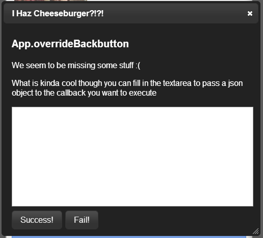
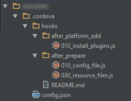

Using Cordova and Ionic
To Create Multiplatform Mobile Apps
AngularJS DC
Michael Mendelson
|
Agenda
|
|
|
|
|
|
|
|
Cordova
Advantages
- Write HTML5 app, run on multiple platforms.
- Only code the business logic ONCE.
- Hard to tell from native code.


Cordova
Challenges
- You still have to understand your platform.
- You still might have to write native code, depending on whether there's already a plugin.
- Different platforms - different browsers.
Cordova
Plugin Architecture
- Cordova by itself is not a complete solution.
- Plugins expose the native api of the mobile device.
- Examples: current location, camera, notifications, splash screen, open link in native browser
- PhoneGap is a plugin!
- Plugins Registry: http://plugins.cordova.io/
Cordova
Install a Plugin
C:\dev\ctamobile> cordova plugin add https://github.com/phonegap-build/PushPlugin.git
Fetching plugin "https://github.com/phonegap-build/PushPlugin.git" via git clone
Installing com.phonegap.plugins.PushPlugin (android)
List Your Plugins
C:\dev\ctamobile> cordova plugins list
[ 'com.phonegap.plugins.PushPlugin',
'org.apache.cordova.console',
'org.apache.cordova.device',
'org.apache.cordova.geolocation',
'org.apache.cordova.inappbrowser',
'org.apache.cordova.splashscreen',
'org.apache.cordova.statusbar' ]
Cordova Basics
Cordova: Is it PhoneGap?
A: Sorta
Cordova
Project Structure
- Native code under "platforms"
- HTML code under "www"
- all in all, pretty familiar.
Running the Cordova App
- In the browser!
- Ripple for Android (not the chrome extension)
- Emulators (for either platform)
-
Your phone.
- Android - usb cable
- iPhone - Add the id of your phone and Test Flight code to your app, sign up for Test Flight and set up an account, upload your app there, download it and you're all set!
A classic dialog box
The Cordova Build

- Runs in Ant
- Hooks (i.e. build event scripts) can be added.
- Build for one platform at a time, or multiple.
Demo
Cordova Hello World
OK, so now you're a Cordova expert.
What's next?
Need Some Style?

Styling options/frameworks
- jQuery Mobile
- Sencha Touch
- Kendo UI
- Ionic
More About Ionic?
- Open source.
- Developed by Drifty, which is growing.
- Launched "late last year".
- Released beta in March.
- MIT License (so it can be used commercially)
Ionic Styles
Ionic Styles
- Lists
Ionic Styles
- Lists
- Tabs (each with own "history")
Ionic Styles
- Lists
- Tabs (each with own "history")
- Back behavior
Ionic Styles
- Lists
- Tabs (each with own "history")
- Back behavior
- Control styles